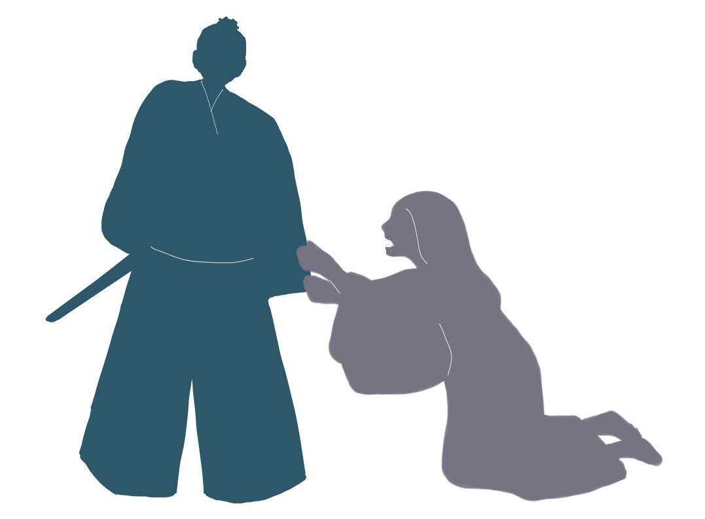
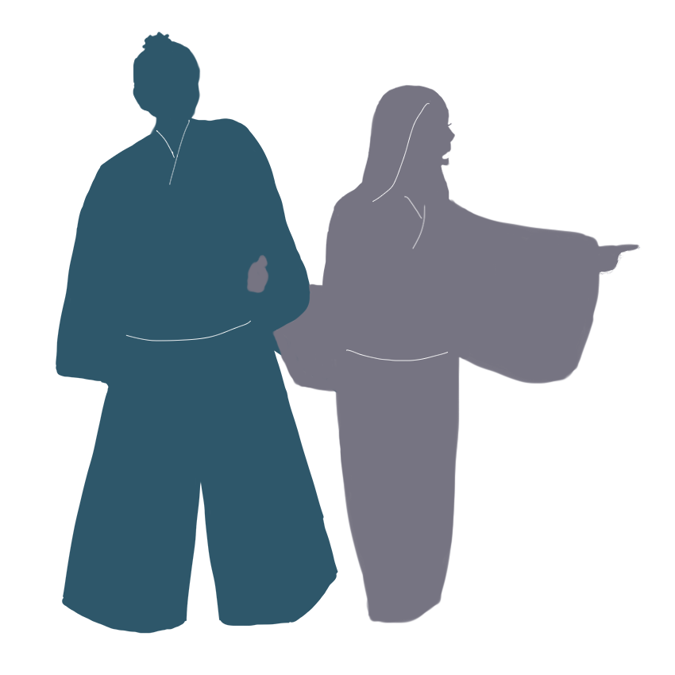

·Listen to me·
·I will tell you the truth·



I had no wish to kill the man. I was about to run away from the grove, leaving the woman behind in tears.
But she frantically clung to my arm.
In broken fragments of words, she said it was more trying than death to have her shame known to two men and that she wanted to be the wife of whichever survived.
Then A FURIOUS DESIRE to kill the man seized me. (Gloomy excitement.) I wanted to MAKE THE WOMAN MY WIFE.
This was NOT ONLY LUST. At that time if I'd had no other desire than lust, I'd surely knock her down and run away.
That man in the blue silk kimono, after forcing me to yield to him, laughed mockingly as he looked at my bound husband.
I ran stumblingly toward my husband’s side, but the man instantly KNOCKED ME DOWN.
Just at that moment I saw an indescribable light in my husband's eyes. Only A COLD LIGHT, A LOOK OF LOATHING.
More struck by the look in his eyes than by the blow of the thief, I called out in spite of myself and fell unconscious.
When she was going out of the grove, her hand in the robber's, she suddenly turned pale, and pointed at me and said, "KILL HIM! I cannot marry you as long as he lives."
"KILL HIM!" she cried many times, clinging to his arms, as if she had gone crazy.
Has SUCH A HATEFUL THING come out of a human mouth ever before?
At these words the robber himself turned pale. He answered neither yes nor no. In a sudden, he KNOCKED HER into the bamboo leaves.